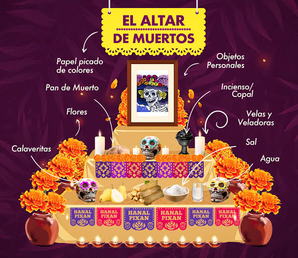

Una tradición mexicana llena de recuerdos y cultura
El altar de muertos es una tradición mexicana que se realiza principalmente el 1 y 2 de noviembre. Las familias colocan ofrendas para recordar a sus seres queridos que han fallecido. Cada objeto tiene un significado especial y representa el cariño hacia las personas que ya no están.

Representa el cielo y la tierra.
Representa el cielo, la tierra y el inframundo.
Representa los pasos que, según algunas creencias, debe recorrer el alma para llegar al descanso.
Los altares son importantes porque mantienen viva una de las tradiciones más representativas de México. También permiten recordar a nuestros seres queridos y conservar nuestras costumbres.